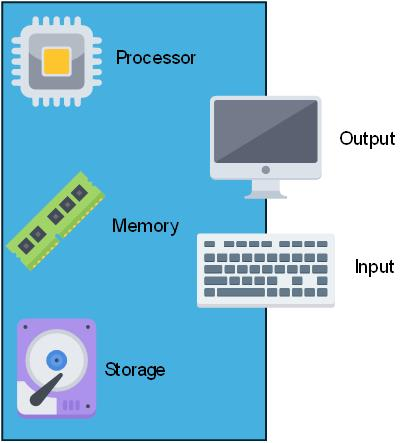
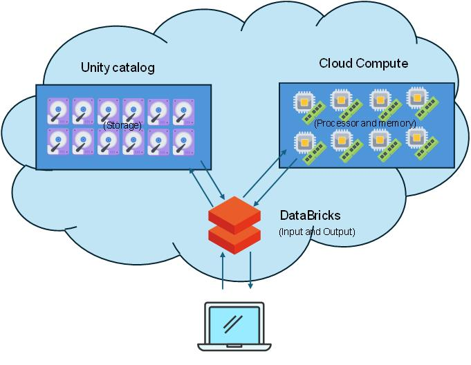
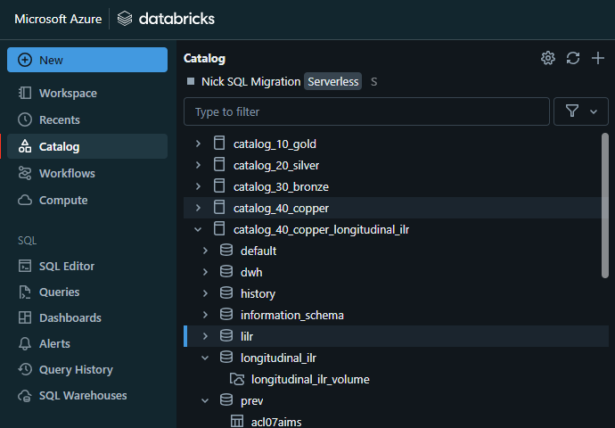
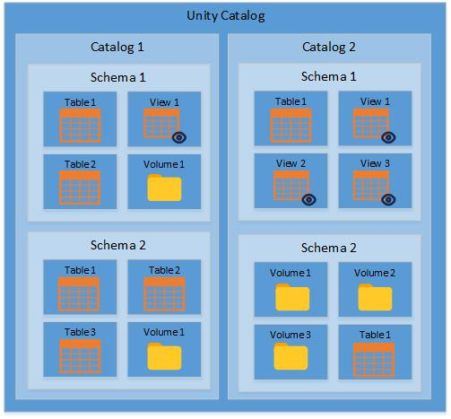
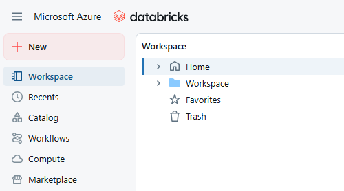
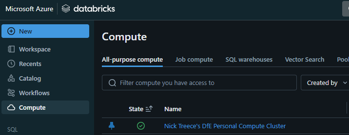

Databricks fundamentals
What is Databricks?
Databricks is a web based platform for large scale data manipulation and analysis using code to create reproducible data pipelines. Primarily it takes the form of a website which you can create data pipelines and perform analysis in. It currently supports the languages R, SQL, Python and Scala, and integrates well with Git based version control systems such as GitHub or Azure DevOps.
Behind the scenes it is a distributed cloud computing platform which utilizes the Apache Spark engine to split up heavy data processing into smaller chunks. It then distributes them to different ‘computers’ within the cloud to perform the processing of each chunk in parallel. Once each ‘computer’ is finished processing the results are recombined and passed back to the user or stored.
Due to the parallel processing capabilities this improves the performance of the data processing and allows for the manipulation of very large data sets in a relatively short amount of time.
In addition, it also provides new tools within the platform to construct and automate complex data transformations and processing.
Key differences
Underpinning the technology are some key differences in how computers we’re familiar with, and Databricks (and distributed computing in general) are structured.
Traditional computing
Currently, we are used to using a PC or laptop to do our data processing. A traditional computer has all of the components it needs to function:
- A processor and memory to do calculations
- A hard drive to store data permanently on
- A keyboard and mouse to capture user input
- A screen to provide outputs to the user

Any traditional computer is limited by its hardware meaning there is an upper limit on the size and complexity of data it can process.
In order to increase the amount of data a computer can process, you would have to switch out the physical hardware of the machine for something more powerful.
On Databricks
In Databricks you can scale the components of your machine up (CPU cores, RAM) without having to build a physical machine to house them, essentially temporarily ‘borrowing’ processor power, memory and storage from a super computer.
This means you can perform very heavy analyses that your laptop wouldn’t be able to cope with. The Databricks platform provides a way for you to interface with the cloud computer in place of the keyboard/mouse and screen, taking your inputs and providing the resulting outputs back to you.
The storage and computation are separated into different components rather than being within the same ‘machine’. Processing (processor and memory) is handled by a ‘compute’ resource, and storage (hard drive) is centralised in the ‘unity catalog’.

Benefits of cloud compute
- Scalable - if you need more computing power, you can increase your computing power and only pay for what you use rather than having to build an expensive new machine
- Centralised - All data, scripts, and processes are available in a single place and access for any other user can be controlled by their author, or the wider Department as required
- Data Governance - The Department is able to ‘see’ all of its data and organisational knowledge. This enables it to ensure it is access controlled and align with GDPR and data protection legislation and guidelines
- Auditing and version control - The Platform itself generates a lot of metadata which enables it to keep versioned history of its data, outputs, etc
- Automation - Complex data processing pipelines can be set up using Databricks workflows and set to automatically run, either on a timer or a specific trigger allowing for a fully automated production process
Each of these aspects bring benefits to the wider Department and for analysts within it.
Due to the scalability of compute resources you can request a more powerful processing cluster allowing you to deal with larger datasets more simply, focussing on the analytical logic of it rather than having to build processes around technical limitations such as storage space and processing power.
The centralised nature of the data storage makes navigation of the Department’s data estate much simpler with everything existing in a single environment. Combined with stronger data governance this makes discovery of supplementary or related data the Department holds much easier. In addition, it allows for datasets that are commonly used across the Department - such as ONS geography datasets - to be standardised and made available to all teams, ensuring consistency of data and it’s formatting across the Departments publications.
The auditing, and automation facilities provide a lot of benefits when building data pipelines. These can be set up to run as required with little manual effort from analysts, and can build automated quality assurance into the pipeline so that analysts can be confident in the outputs. In addition, the auditing keeps a record of all inputs and outputs each time a process is run. Combining this with robust documentation stored in Notebooks allows you debug issues retrospectively without having to repeatedly step through the process to see where unexpected issues have occurred.
Key concepts
Storage
There are a few different ways of storing files and data on Databricks. Your data, and modelling areas will reside in the ‘unity catalog’, whereas your scripts and code will live on your ‘workspace’.
Unity catalog
The majority of data and files on Databricks should be stored in the ‘unity catalog’. This is similar in concept to a traditional database server, however the unity catalog also contains file storage in the form of volumes.
The unity catalog can be accessed through the ‘Catalog’ option in the Databricks sidebar.

Structure of the unity catalog
There is one ‘unity catalog’ for the whole of the Department for Education, this is what enables the Department to keep track of all of it’s data in a single place. The ‘unity catalog’ can contain any number of catalogs (equivalent to databases).
A catalog can contain any number of schemas.
A schema can contain any number of tables, views and volumes.

Catalogs not databases
The ‘unity catalog’ is a single catalog that contains all the other catalogs of data in the Department. Catalogs are very similar in concept to a SQL database in that they they contain schemas, tables of data and views of data.
Schemas, tables and views
Like a SQL database a catalog has schemas, tables, and views which store data in a structured (usually tabular) format.
A schema is a sub-division of a catalog which allows for logical separation of data stored in the catalog. Whoever creates a schema is its owner, and is able to set fine grained permissions on who can see / edit the data within it. Permissions can also be set for groups of analysts, and can be modified by the ADA team if the original owner is no longer available.
Tables are equivalent to SQL tables, and store data in a tabular format. Tables in Databricks have the ability to turn on version control which audits each change to the data and allows a user to go back in time to see earlier versions of the table.
Views look and act the same as tables, however instead of storing the data as it is presented a view is created from a query which is ran when the view is referenced. This allows you to provide alternative ways to format data from tables without storing duplicated data.
Tables and views sit within a schema and these are where you would store your core datasets and pick up data to analyse from.
Volumes
Unlike a SQL database the unity catalog also contains volumes, which are file storage similar to a shared drive. They can be used for storing any type of file.
Volumes are stored under a schema within a catalog. Files in here can be accessed and manipulated through code.
Examples of files suitable to be stored in a volume include CSVs, JSON and other formats of data files, or supporting files / images for applications you develop through the platform. You can also upload files to a volume through the user interface.
Workspaces - Databricks file system (DBFS)
Each user has their own workspace which serves as a personal document and code storage area. It contains a user folder which is only accessible to that user by default, along with any Git repositories that you have cloned or created within Databricks.
Your workspace can be accessed through the ‘Catalog’ option in the Databricks sidebar.

Everything in your workspace is only accessible to you unless you share it with other users. When you do share a script or file you can specify whether the person you’re sharing it with is able to view/edit/run the file you’re sharing.
Sharing code this way can be useful but has it’s risks. If you allow other users to edit and run your workbooks it’s possible that they can make changes or run it simultaneously resulting in unexpected results.
For collaboration on code you should use a GitHub/DevOps repository which each user can clone and work on independently.
Repositories for version control
All code should be managed through a versioned repository on GitHub or Azure DevOps. You can commit and push your changes to the central repository from the Databricks platform. Pull requests to merge your changes into the ‘main’ branch still take place on your Git provider.
To connect Databricks to a repository refer to the Databricks and version control article.
Compute
In order to access data and run code you need to set up a compute resource. A compute resource provides processing power and memory to pick up and manipulate the data and files stored in the ‘unity catalog’. The compute page can be accessed through the ‘Compute’ option in the Databricks sidebar.

There are several types of compute available and you will need to make the most appropriate choice for the kind of processing you’re wanting to do. The types are:
SQL Warehouse - multiple users, SQL only; best to use if you’re only querying data from Databricks using SQL
Personal cluster - single user, supports R, SQL, python and scala; best to use if you require languages other than SQL
Shared cluster - multiple users, supports SQL, python and scala;
You are able to create a personal cluster yourself, whereas shared clusters and SQL warehouses have to be requested through the ADA team.
In most cases a personal cluster will be the most versatile and easily accessible option. However your team may want to request a shared SQL warehouse if you have a lot of processing heavy SQL queries and do not need to use any other language in the Databricks platform itself.
All compute options can be used both within the Databricks platform and be connected to through other applications. Instructions on how to connect R / RStudio to a SQL Warehouse, or a personal cluster can be found on the following pages:
Once you have a compute resource you can begin using Databricks. You can do this either through connecting to Databricks through RStudio, or you can begin coding in the Databricks platforms using scripts, or Notebooks.